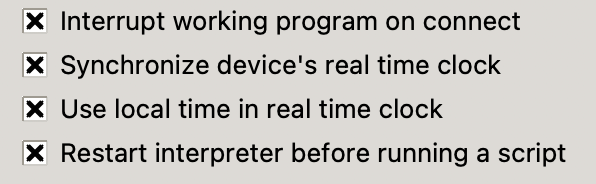

Getting Local Time
Lesson Overview
In this lesson, we will learn how to get the local date and time from the MicroPython runtime using the
standard localtime() function. We will learn about how to use the eight integers returned by the localtime() functions.
MicroPython provides a very convenient function called localtime() that will get the time from the host computer in your local timezone that you connect to via your USB cable. Your local computer has a clock and knows the time in the local timezone. This information is usually sent to MicroPython runtime when the computer is connected to the USB cable.
Note
The gmtime() function returns the time in UTC (Coordinated Universal Time) time. Use this if you want time stamps that are not dependent on time zone and daylight savings rules. For example, log files should use this function.
Sample Code
1 2 3 | |
Result
Local time returns a read-only tuple:
1 | |
Extracting Specific Date/Time Components
1 2 3 4 5 6 7 8 9 10 11 12 13 | |
Format of the Localtime
The format is a "8-tuple" of integers in the format (year, month, mday, hour, minute, second, weekday, yearday)
Most of the values are pretty intuitive to figure out. There are a few notes.
- Hour is the hour in 24-hour format. If we want to display the hour in 12-hour format we will need to do some formatting.
- Weekday is a numeric code that runs from 0 for Monday to 6 for Sunday.
- Yearday is the day of the year. January 1st is the fist day of the year so it is a 1 (not 0).
Printing Formatted Dates
Sample Code
1 2 3 4 5 6 7 8 9 10 | |
Results
1 2 3 4 5 6 7 8 9 10 11 | |
Label Formatting
We can also add labels to make the date and time easier to read.
1 2 3 4 5 6 7 8 9 10 11 12 13 14 15 16 17 18 19 20 21 22 23 24 25 26 | |
Label Formatted Results
1 2 | |
Modifying the Thonny Parameters
By default Thonny syncs the host time at power up.

However, to test that our code is setting the correct local time we will need to disable this in future labs.

After we do this, the localtime() will return the number of seconds
after midnight on January 1st, 2021.
1 2 | |
1 | |
We will used this when we use a RTC and use the Pico "W" to sync with the NTP functions.
1 2 3 4 5 6 7 8 9 10 11 | |
Result:
1 2 | |
References
- MicroPython Time Documents
- Bhavesh Kakwani's blog Sync time in MicroPython using NTP - although the blog uses an ESP32, the concepts are the same on other processors such as the Raspberry Pi Pico.